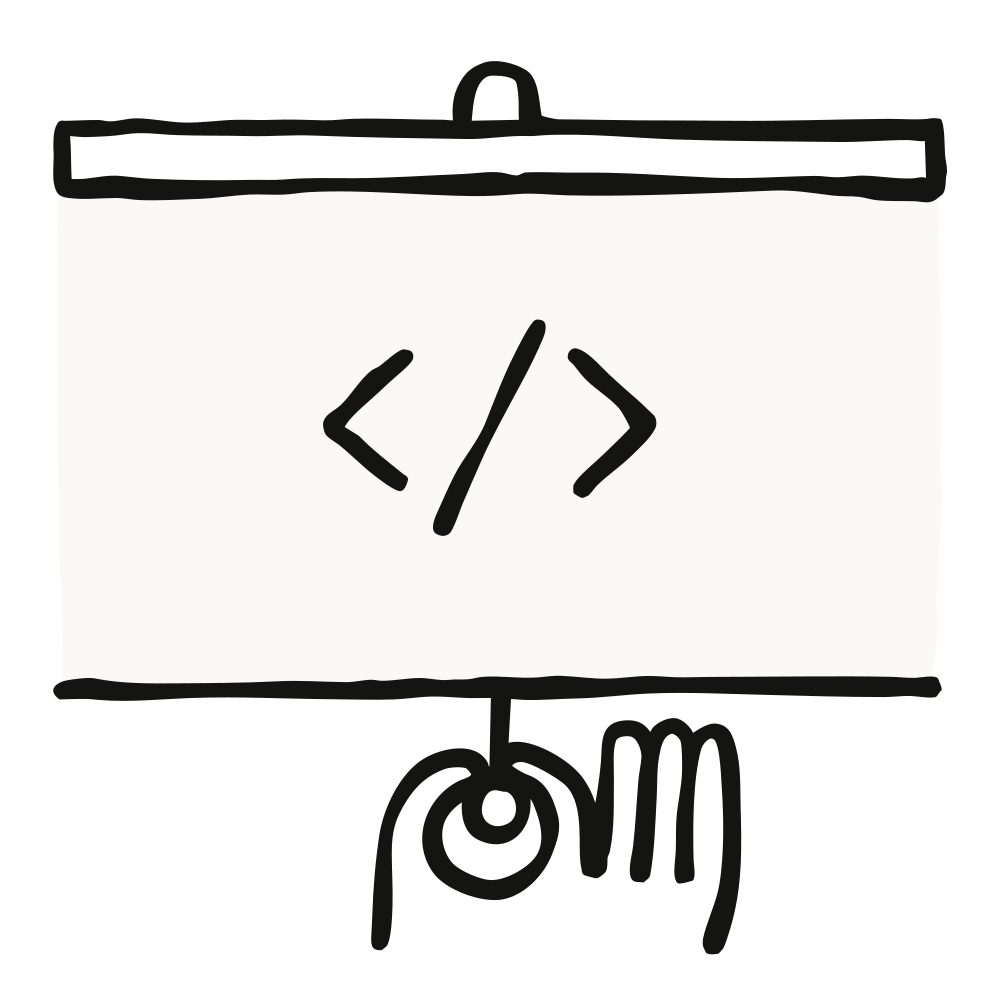
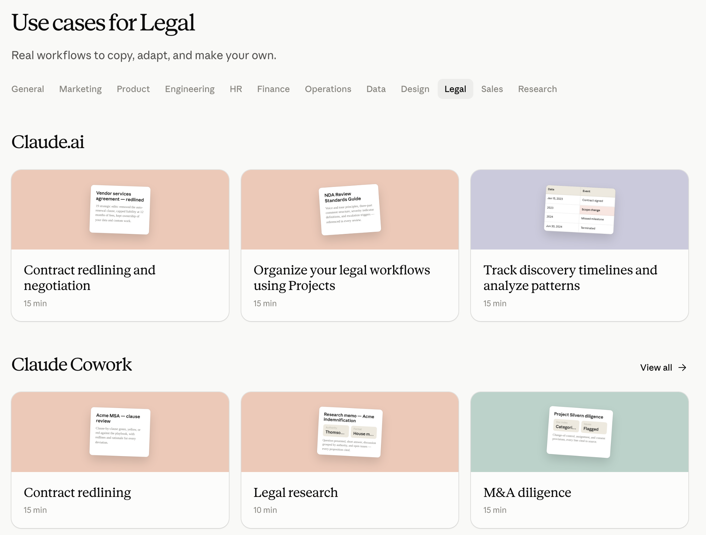
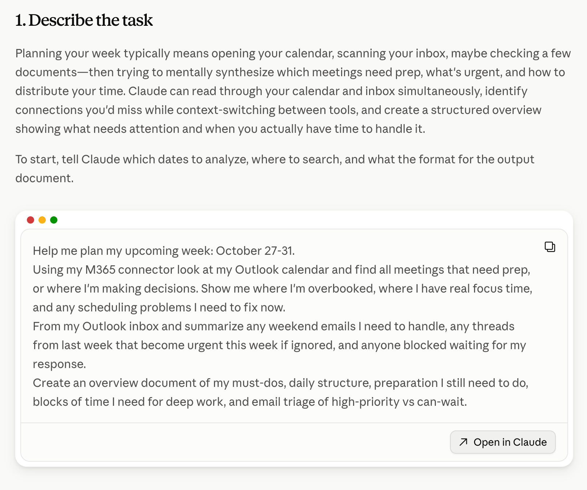

Claude Academy는 AI를 효과적으로 쓰는 법을 배우는 데 필요한 교육 도구를 제공한다. 왜 이걸 내놓는지, 그리고 Anthropic 자신의 교육·학습 방식이 이 제품에 어떻게 반영됐는지 정리한다.

매달 수백만 명이 AI를 어떻게 쓰는지 배우려고 Anthropic.com을 찾는다. Anthropic은 이것을 막중한 책임으로 받아들이고 있고, AI를 안전하게·효과적으로·의도를 가지고 쓰는 법에 대한 교육 자료를 만드는 전담 교육자 팀을 두고 있다. 이들이 잡고 있는 전제는 하나다 — AI 교육은 사람의 주체성(agency)을 키우고, 학습자가 자기 역량을 넓히도록 힘을 실어 줘야 한다.
이 글은 전 세계 수백만 학습자에게 AI 교육을 설계하고 확장하는 방식을 Claude Academy를 통해 공유하는 내용이다.
모델 지능이 계속 발전할수록, 모두가 AI를 안전하고 효과적으로 쓰는 법을 이해해야 할 필요는 더 급해진다. AI 교육은 사람들이 더 많은 일을 해내도록 돕는 데서 그치지 않는다. AI가 자기 커뮤니티와 일터에 어떤 모습으로 들어오기를 원하는지에 대해 정보에 근거한 결정을 내리게 해 준다.
AI를 쓸 줄 알게 되면 개인도 조직도 AI의 잠재적 이득은 취하면서 일부 위험은 줄일 수 있다. 수작업을 줄이는 것, 이전에 없던 일하는 방식을 여는 것, 새로운 영역으로 역량을 넓히는 것(upskilling)이 여기에 포함된다.
Anthropic은 AI 유창성(AI fluency)으로 가는 여정이 입사 첫날부터 시작된다고 본다. 온보딩에서 전 직원에게 가르치는 것은 세 가지다.
학습자는 어떤 작업을 AI에게 맡기고 어떤 작업을 자기가 할지 의도적으로 결정하는 연습을 한다. 또한 AI가 흔히 저지르는 실수 유형을 배워서, AI가 만든 결과물을 더 효과적으로 검토할 수 있게 한다.
온보딩이 끝나면 "에버보딩(ever-boarding, 상시 온보딩)" 프로그램이 이어진다. 여기서는 AI의 능력과 한계를 깊이 파고, 인간-에이전트 팀에서 일하기 위한 근거 기반 실천법을 다룬다. 이렇게 빠르게 움직이는 분야에서 지속적 학습은 모든 직무에 요구되는 기본값이라는 것이다.
라이브 교육과 온라인 교육에 더해, 전 직원에게 Claude 기반 도구(예: Claude Tag)를 제공한다. 회사·직무·자기 온보딩 계획에 관한 사실상 모든 질문에 즉시 답을 얻게 하기 위해서다. IT·법무·복리후생 Slack 채널도 Claude가 1차로 응대하도록 해서, 사람들이 가장 중요한 일에 집중할 수 있게 했다.
직원들이 AI에 유창해지면 나타나는 변화는 이렇다 — 실제 문제를 중심으로 유연하게 팀이 꾸려지고, 더 넓은 범위의 프로젝트를 떠맡으며, 사내 전문가에게서 대규모로 배운다. Anthropic에게 AI 유창성은 임팩트를 내기 위한 토대다.
Claude Academy의 모든 교육 자료는 폭넓게 접근 가능하도록 설계된다. AI와 함께 일하는 법, 그리고 AI가 어떻게 작동하는지에 대한 가장 최신 정보에 닿을 수 있게 하는 것이 목표다. Claude 사용법에 대한 학습도 물론 제공하지만, 제품·모델에 종속되지 않는(product and model agnostic) 학습도 함께 제공한다. 세상에 광범위한 영향을 미칠 이 새로운 기술의 핵심 정보를 민주화하기 위해서다. 여기에 더해 아래의 학습 설계 원칙을 따른다.
AI를 잘 쓰는 법을 배우는 일은 학습자에게 새로운 문·새로운 기회를 열어 줘야 한다. 그래서 학습 자료는 학습자가 가장 신경 쓰는 문제를 풀도록 설계된다. 제품과 기능 사용법을 보여 주는 학습을 그냥 제공하는 대신, 일과 삶에서 마주치는 문제를 중심에 놓는다.
눈여겨볼 점은, 교육 자료가 기술 위축(skill atrophy)을 막기 위해 자신에게 중요한 기술은 계속 연습하라고 의식적으로 권한다는 것이다. 예를 들어 법무 유스케이스 모음은 Claude 사용법을 가르치는 동시에, 어떤 작업은 계속 내가 쥐고 있어야 하는지를 돌아볼 기회를 함께 준다.

AI가 변하는 속도를 감안하면, 기능을 마스터하는 것만으로는 오래가는 AI 유창성에 도달하지 못한다. 한때 유용했던 구체적 행동조차 최신 모델에서는 덜 중요해졌다. "청중을 묘사하라(describe your audience)" 같은 것이 그 예다.
예전에는 Claude에게 "이 작업은 법무 부서 동료들을 위한 것"이라고 말해 줘야 했다. 지금은 고품질 출력에 그 정보가 필요하면 Claude가 알아서 물어본다.
그래서 교육팀은 AI 유창성을 위한 특정 행동을 강조하는 데서 벗어나, 더 넓고 더 오래가는 마인드셋을 기르는 쪽으로 이동했다. 이런 것들이다.
이런 마인드셋은 제품과 기능이 바뀌어도 사람들이 AI를 두고 좋은 판단을 내리도록 도와준다.
AI에 관한 학습은 대부분 사용자와 에이전트의 대화에만 거의 전적으로 집중한다. 그것도 물론 결정적으로 중요하지만, Anthropic은 AI 사용을 둘러싼 앞뒤 순간들도 그만큼 중요하다고 본다.
그래서 학습자에게 애초에 어떤 작업을 AI에 위임해야 하고 어떤 작업은 내가 쥐고 있어야 하는지 스스로 물어보라고 권한다. 예를 들어 메모의 민감한 부분은 직접 초안을 잡고, 요약 슬라이드 만드는 일은 AI에게 넘기고 싶을 수 있다. 또는 탐색적 데이터 분석은 Claude가 돕게 하고, 최종 확인은 직접 하고 싶을 수 있다.
여기에 더해 동료·고객·이해관계자에게 AI 사용을 윤리적으로 고지하는 법도 가르친다. 문서·분석·미디어를 만드는 과정에서 AI를 어떻게 사용했는지, 남들과 공유하기 전에 명시적으로 밝히는 것이 여기 포함된다. 이렇게 시야를 넓혀야 학습자가 처음부터 AI와 의도적인 관계를 맺게 된다.

유스케이스·튜토리얼·코스는 모두 진행하면서 Claude로 직접 연습하도록 권한다. 학습 연습 문제는 성찰과 실험을 유도해서, 학습자가 AI를 쓸 때 자기에게 무엇이 가장 잘 맞는지 스스로 발견하게 한다.
눈여겨볼 대목은 이것이다 — 오늘의 Claude Academy 경험은 앞으로 겪을 것 중 가장 경직된 형태다. Claude와 함께라면 이전에는 불가능했던 규모로 고도로 개인화된 학습 활동과 연습을 제공할 수 있게 될 것이라는 이야기다.

AI를 효과적으로 쓰는 법을 배우는 것은 AI에 유창해지기 쉬워지는 데서 끝나지 않는다. 개인이든 조직이든 사실상 어떤 주제로든 역량을 넓히는 데 도움이 된다.
빽빽한 설명이 이해가 안 되는가? Claude에게 그걸 설명하는 다이어그램을 그려 달라고 하면 된다. Claude를 학습 파트너로 두면 소크라테스식 문답이나 인터랙티브 설명자료가 프롬프트 하나 거리에 있다. 그리고 오늘의 제품과 모델은 가능한 것의 표면을 겨우 긁고 있을 뿐이다.
일상에서 AI를 쓰는 개인이든, 조직 전환을 이끄는 리더든, Claude Academy에는 AI를 효과적이고 안전하게 적용하는 법을 배우도록 돕는 도구가 있다. 사용법은 이렇다.
Claude Academy는 지금 academy.claude.com에서 바로 접속하거나, Claude 프로필 메뉴의 "Learn more" 탭에서 들어갈 수 있다.
Anthropic은 Claude가 대단한 학습 파트너가 될 수 있다고 보고, Claude Academy 안에서 그 비전을 온전히 실현할 큰 계획을 갖고 있다. 다만 아직 갈 길이 많이 남았다는 점도 함께 밝힌다. Claude가 더 유능해질수록 개인화되고 인터랙티브한 학습의 새로운 기회가 열릴 것으로 보고 있으며, 사용자와 함께 Claude Academy의 미래를 만들어 가기를 기대한다고 말한다.
어떤 학습이 자신에게 가장 잘 맞는지에 대한 피드백도 환영한다. 모든 코스·튜토리얼·유스케이스마다 무엇이 도움이 됐고 무엇을 개선하면 좋을지 남길 수 있는 창구가 있다.
지금 학습 시작하기 — Claude Academy에서 바로 시작할 수 있다.